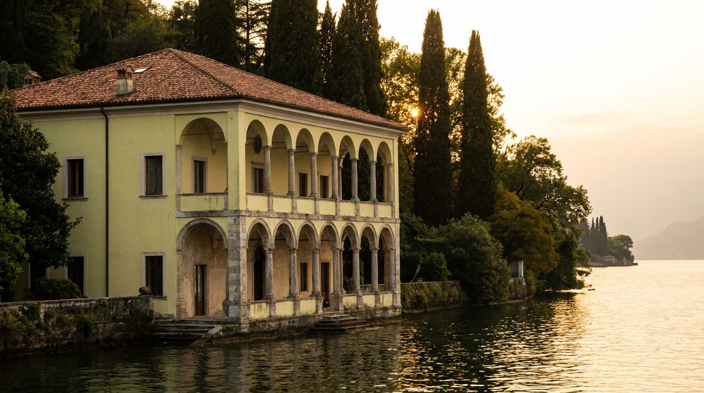
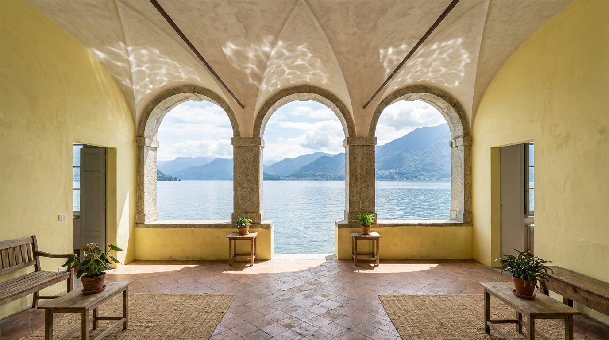

Atlante · IT-08 · Italia · Nord
Villa sul lago
Esempi · esterno e interno


Architettura · elementi riproducibili
- logge ad archi su due livelli, colonne in pietra, pareti a calce colorata (giallo limone, bianco), pavimenti in cotto e marmo, soffitti a travi
- altezza 4-5 m
- vetrate e portefinestre verso il lago
- terrazze con parapetti in pietra
- Il colore dominante è il paesaggio: azzurro lago e verde bosco entrano dalle aperture.
Luce
riflessa dall'acqua, da nord-ovest, diffusa e fredda, con bagliori speculari sul soffitto.
Prompt di generazione (EN)
Lake Como villa loggia, arched openings with stone columns framing the water, pale lemon limewash walls, terracotta and marble floor, 4.5 m beamed ceiling, cool diffused light bouncing off the lake, soft specular highlights on the ceiling, 28 mm, airy grade with lemon-yellow and lake-blue.
Riferimenti reali
- Villa del Balbianello, Lenno (CO) apri ↗